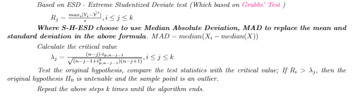

Loading...
The three columns data we got here are origin airports, destination airports and the date of flight. Where the mean and standard divation of those three variables is meaningless, so we choose to calculate the median and mode (Actually the median is also meaningless). Average flights per day => 10491 Here is the hitogram for flights per day:
Here are mean, median, std values of variables in COVID-19 dataset.
As for the anomalies detection. Since this data could be considered as kind of time series, we choose to calculate the anomalies point by using S-H-ESD method. We constructed a variable named flights, which is used for represent the number of flights that launched that day, which is also used for anomalies detection. For those points, we choose to keep them since they are part of our data, which is the real data, could got some unexpected situation, and that's what we are going to dig.
Using lof to detect anomlies on CDC dataset
the inliers in the output are the new variables that do not contain the outliers. First compute the local density deviation of a given data point with respect to its neighbors. It considers as outliers the samples that have a substantially lower density than their neighbors. Use method as a threshold value for distinguishing outliers and common points.
Here are three different values of K to detect anomlies
K = 5:
K = 10:
K = 15
